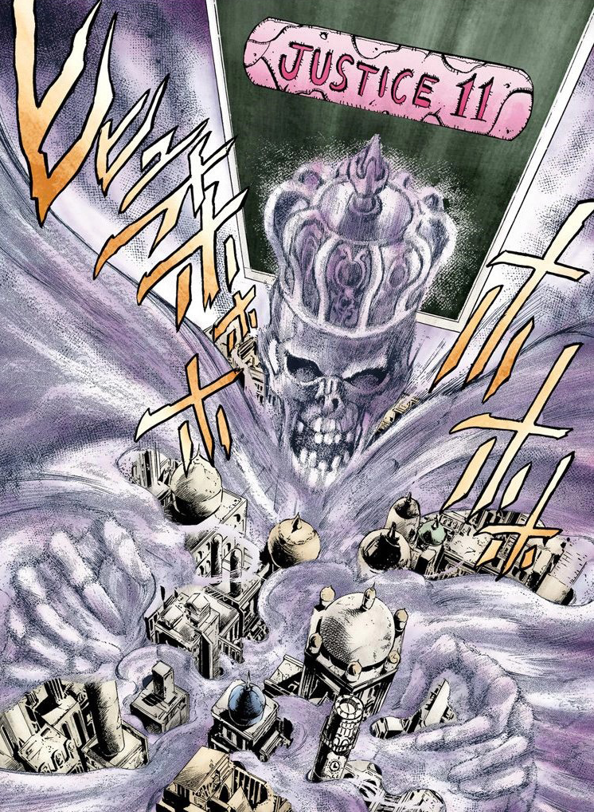

¿Qué es un stand?
Stand, en plural Stands, es un poder sobrenatural único de JoJo's Bizarre Adventure. Los Stands se pueden definir rápidamente como la manifestación física del alma de su usuario, con ello un Stand también puede representar la manifestación del "espíritu de lucha" o la psique del individuo, hasta cierto punto. Estos Stands defienden y potencian a sus usuarios en una gran variedad de maneras, cuando son revelados pueden estar representados de una gran variedad de formas que van desde figuras flotando cerca de ellos hasta una habilidad o un traje. Sin embargo, generalmente, los Stands no pueden ser vistos por personas que no posean uno.
¿Como se obtiene un stand?
En la mayoría de los casos, los Usuarios del Stand nacen con sus Stands o con el potencial de desbloquear uno más adelante en la vida. La manera más difundida de adquirir un Stand es ser perforado por una Flecha especial hecha de un metal proveniente de un meteorito que cayo en Groenlandia hace 50.000 años. Si una persona tiene el potencial, sobrevivirá al ser apuñalado y adquirir un Stand. De lo contrario, la persona morirá.
Stands: Grupo Joestar
Star Platinum
Star Platinum es un Stand de corto alcance, con un alcance básico de solo 2 metros del cuerpo de Jotaro, pero con una fuerza, velocidad y precisión increíbles. Star Platinum posee una increíble fuerza física, capaz de lanzar un Jeep con cuatro hombres y una chica fuera de la trayectoria de un camión de 18 ruedas con una sola mano. En su primera aparición fue capaz de doblar las barras de acero de la celda de Jotaro con sus propias manos.
Habilidad principal:
Detener el tiempo
Cuando se activa, Star Platinum puede detener el flujo de tiempo por un breve momento, haciendo que todo a su alrededor aparezca congelado en su lugar. Durante este lapso de tiempo, Jotaro puede interaccionar con cualquier objeto o persona dentro de su rango.
Hermit Purple
Hermit Purple se manifiesta como múltiples enredaderas espinosas cubiertas de color púrpura que se generan a partir de las manos de Joseph. Estas enredaderas son lo suficientemente fuertes como para soportar su propio peso y el tiempo suficiente para atar a alguien completamente. Este stand no tiene personalidad
Habilidad principal:
Adivinación
La habilidad principal de Hermit Purple es la información divina. Mediante el uso de cualquier objeto o material en conjunción con Hermit Purple, Joseph puede mostrar cualquier información que desee ver. Produce fotografías psíquicas destruyendo una cámara. La cámara rota produce entonces una fotografía que revelará la información tal como es en ese momento del tiempo, tal como una persona en su situación actual.
Magician's Red
Magician's Red es una figura humanoide con una cabeza similar a las aves. Tiene la parte superior del cuerpo muy musculoso y sus piernas son a veces cubiertas de llamas ardientes. Magician's Red es un Stand humanoide de rango-medio; su capacidad única es la generación y manipulación del fuego.
Habilidad principal:
Manipulación de la Llama
Magician's Red es capaz de generar llamas lo suficientemente intensas como para derretir metáles, como proyectiles metálicos en el aire o vías de ferrocarril. También tiene usos más matices, que Avdol puede manipular sin restricciones. Las llamas al ser el producto de un stand, son invisibles a los no-usuarios de stand.
Hierophant Green
Hierophant Green aparece como un Stand humanoide, tiene características robóticas, con los ojos amarillos, y tiene apéndices de color verde de textura similar a la de un melón. es un Stand elástico y remoto, capaz de "explorar" el terreno y realizar acciones desde una gran distancia. Kakyoin ha poseído este Stand desde su nacimiento.
Habilidad principal:
Emerald Splash
La capacidad más potente de Hierophant Green y una de las que más se ven en la serie. Reúne energía en su cuerpo, lo hace brillar de color verde brillante, antes de mandar una gran cantidad de energía que toma la forma de esmeraldas, gama y similar a una escopeta similar a la dispersión de la explosión, junto con su increíble poder destructivo y de alta velocidad, lo que hace a Hierophant Green un combatiente muy capaz.
Silver Chariot
En apariencia, se ve como un humanoide delgado, robótico vestido con armadura medieval, armado con un estoque. Tiene una cintura muy delgada que consiste en poco más que un cable casi tan ancho como la cabeza del Stand. Es un Stand muy ágil, capaz de atacar a los enemigos con bombardeo de tajos de espada y estocadas antes que el oponente pueda reaccionar. También puede utilizar esta agilidad, junto con su espada, para defender y desviar los ataques
Habilidad principal:
Disparo de estoque
Es una habilidad que sólo varia de Silver Chariot. Esta lanza su estoque con gran fuerza y precisión, capaz de rebotar en las superficies y golpear con suficiente fuerza para perforar un cuerpo humano. El mayor inconveniente de hacer esto es que Silver Chariot sólo puede materializar una espada, por lo que Polnareff debe recuperar el arma antes de siquiera ser capaz de atacar de nuevo.
The Fool
The Fool no tiene una manifestación psíquica real (es decir, no es normalmente visible), sino que tiene su forma mediante la manipulación de las partículas de la arena y el polvo en el ambiente y como tal, es uno de los pocos stands realmente visibles para todo el mundo, no sólo para los usuarios de Stand.
Habilidad principal:
Manipulación de arena
Parecido al Magician's Red de Muhammad Avdol, Iggy es libre de manipular la arena como le plazca y la arena no se comporta como arena normal, inmune a ser empapada por ejemplo o cambiando su densidad para atrapar un objeto dentro de él. The Fool sólo está atado a la arena que manipula, no puede ser dañado de ninguna manera en esta forma (atacarlo significaría simplemente atacar un montón de tierra), y como tal, Iggy no puede y no será dañado si el Stand es atacado.
Stands: Grupo DIO
The World

Siendo un stand humanoide, The World es alto y tiene una apariencia musculosa. The World es un Stand de corto alcance excepcionalmente potente al igual que Star Platinum, posee la misma fuerza y velocidad de este, como es mencionado por Noriaki Kakyoin y Jotaro Kujo, pero con una distancia máxima efectiva manifestada entre 10 m. A pesar de que requiere una distancia cercana para atacar, es increíblemente difícil de detener una vez dentro del rango antes mencionado.
Habilidad principal:
Detener el tiempo
La habilidad clave de The World es su capacidad para detener el tiempo, permitiendo sólo a sí mismo y a DIO (además de alguien más con el mismo poder) Durante el tiempo detenido, DIO puede moverse libremente y tocar a cualquiera que esté dentro del plano de tiempo detenido, incluyendo a objetos, lo que le permite golpear a sus enemigos indefensos, moverse a una posición superior, y juguetear con sus víctimas. Los objetos que DIO puede lanzar potencialmente pueden moverse momentáneamente en el tiempo detenido antes de detenerse, así una ráfaga de cuchillos lanzados podría volar varios metros antes de detenerse cerca de Jotaro.
Justice
Justice principalmente toma la apariencia de una nube masiva de niebla, de ser lo suficientemente grande como para envolver una ciudad pequeña. Cuando se materializa, aparece como un fantasma esquelético que lleva una corona grande, con las nubes de niebla que se arremolina alrededor de su cabeza y da como un traje.
Habilidad principal:
Títeres de cadáver
El uso más devastador del poder de hacer marionetas de Justice es su capacidad para "reanimar" a los muertos, lo que puede dar lugar a ejércitos de zombis bajo el control de Justice. Puede manejar una cantidad de zombis inderterminada por lo que sabemos hasta el momento. Cada zombi tiene muchos agujeros a lo largo de su cuerpo para que sean más fáciles de manipular, y desarrollan una lengua larga, afilada capaces de cortar a través de la carne.
The Emperor
Emperor es un Stand en forma de revólver combinado con una pistola automática que al instante aparece en la mano derecha de su usuario, Hol Horse, cada vez que este lo invoca. Al igual que la mayoría de los otros Stands.
Habilidad principal:
Balas rastreadoras
La habilidad característica de Emperor, y también la más peligrosa, es su capacidad para controlar libremente la trayectoria de sus balas. Hol Horse es capaz de controlar las balas con la suficiente precisión, a tal punto que pudo evitar que Silver Chariot las detuviera con su espada a pocos centímetros de impactar con esta. Hol Horse no se limita a atacar blancos vivientes, ni hacer las balas que se mueven hacia adelante. Él se ha mostrado capaz de romper vidrios detrás de él, a pesar de estar disparando la pistola hacia el lado opuesto, con la misma velocidad que una bala normal
Cream
Cream tiene dos aspectos básicos; la de un gran monstruo humanoide con rostro calavérico y con una máscara negra que parecida a la capucha de un verdugo. Otras características incluyen emblemas de corazón en la parte superior de su máscara y sus hombros, además de dos cuerno protuberantes a sus costados. Cuando utiliza su habilidad adopta una segunda forma que consiste en un círculo móvil de vacío que se abre paso a través de cualquier objeto y personas que atraviese. Esta segunda forma es en realidad un vacío hecho por Cream al comerse a sí mismo y Vanilla Ice
Habilidad principal:
Vació
Es capaz de convertirse en un portal a una dimensión de vacío, que Vanilla Ice utiliza principalmente para desintegrar todo lo que se interponga en su camino y también para esconderse. El portal real se sitúa en la boca de Cream de modo que su modus operandi es devorarse a si mismo y a su usuario para así convertirse en un portal flotante en forma de esfera. En este estado Vanilla Ice y Cream son invulnerables y casi indetectables